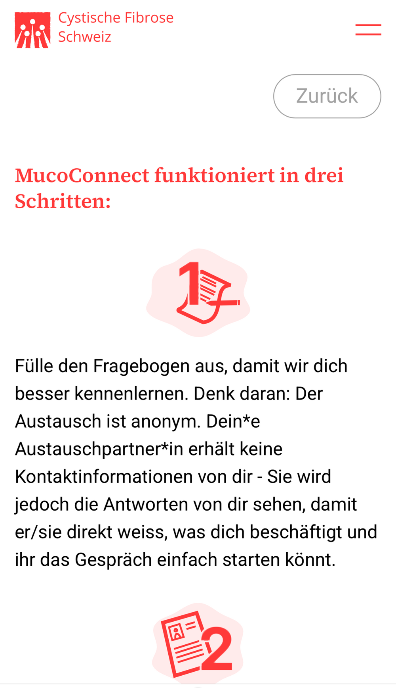

restful baut mit Organisationen Peer-Angebote auf, die unter ihrem Namen laufen, und digitalisiert Patientenpfade für Institutionen im Gesundheitswesen. Methodisch fundiert, technisch umgesetzt.

Aufbauen, entwickeln, skalieren. Wir bauen mit dir ein Angebot auf, in dem Betroffene voneinander lernen, und betreiben es unter deinem Namen.
Agentur für Blended Care. Wir entwickeln digitale und hybride Angebote entlang des Versorgungsverlaufs, von der Konzeption bis zum Betrieb.
Betroffene vertrauen Betroffenen. Ein Peer-Angebot öffnet Zugang zu Menschen, die Beratungsstellen selten aufsuchen.
Peer-Austausch ersetzt keine Behandlung. Er fängt Fragen zwischen den Terminen auf.
Strukturiert erhoben wird Erfahrungswissen auswertbar, auch gegenüber Geldgebern.
«Gleichbetroffene wissen etwas, das in keiner Sprechstunde Platz hat.»
| Ausgangslage | 1 · Analyse | 2 · Konzeption | 3 · Aufbau | 4 · Betrieb |
|---|---|---|---|---|
Du überlegstDie Idee ist da, das Angebot noch nicht. | Gespräche mit dir und Betroffenen, Ziele und Rahmen | Format aus unserem Playbook, Rollen, Ablauf | Plattform unter deinem Namen, Pilot | Übergabe, Support, Auswertung |
Analog unterwegsTreffen, Gruppen, Telefonkontakte. | Wer nimmt teil, wer fehlt? | Digitale Ergänzung zu deinen Gruppen | Bestehende Peers einbinden | Analog und digital koordinieren |
Es harztBesteht, kommt aber nicht in Gang. | Beteiligung, Matching, Abläufe auswerten | Format, Matching und Rollen neu ausrichten | Umstellung, Schulung Koordination | Begleitung in der Wachstumsphase |
Digitale Prävention, Früherkennung und Blended-Stepped-Care-Behandlung von Menschen mit Schlaf-Wach-Erkrankungen.
Peer-Unterstützung bezeichnet einen Prozess, bei dem Menschen mit gemeinsamen Erfahrungen als Gleichbetroffene zusammenkommen, um sich gegenseitig zu unterstützen.[1]
Sie ersetzt keine medizinische oder therapeutische Behandlung, sondern ergänzt professionelle Versorgung dort, wo kontinuierliche psychosoziale Begleitung fehlt.[2]
[1] Penney, 2018 · [2] Fortuna et al., 2020; Bravata et al., 2024
 Raphael ReberStrategie & Partnerschaften
Raphael ReberStrategie & Partnerschaften Sulamith ScheurerProduktmanagement
Sulamith ScheurerProduktmanagement Stefan NiederhauserTechnologie
Stefan NiederhauserTechnologie Chantal KuskeScientific Advisory
Chantal KuskeScientific Advisory Melanie SpeschaProjekte & Fundraising
Melanie SpeschaProjekte & Fundraising Lona GauglerIndustry Lead
Lona GauglerIndustry Lead Silvan JostTechnologie
Silvan JostTechnologieFlavia WasserfallenStänderätin SP (Bern), Präsidentin Allianz Gesunde Schweiz, Präsidentin geliko
Dr. med. Christoph HamannLeiter Kinder- und Jugendpsychosomatik INSEL
Felix MuffVRP Concordia Versicherungen
Melanie MettlerFinanzdirektorin Stadt Bern, Matronatskomitee Selbsthilfe CH
Felix WettsteinNationalrat Grüne (Solothurn), Präsident pro-salute
Andrea JansenInvestorin, Board Member Aepsy, mal ehrlich
Christian HirsigUnternehmer, Gründer PowerCoders & high-five.ai
Erzähl uns kurz, wo du stehst. Wir melden uns innert weniger Arbeitstage für ein unverbindliches Erstgespräch.